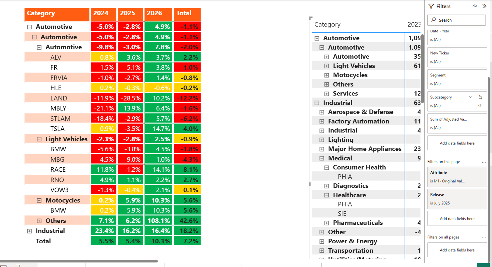
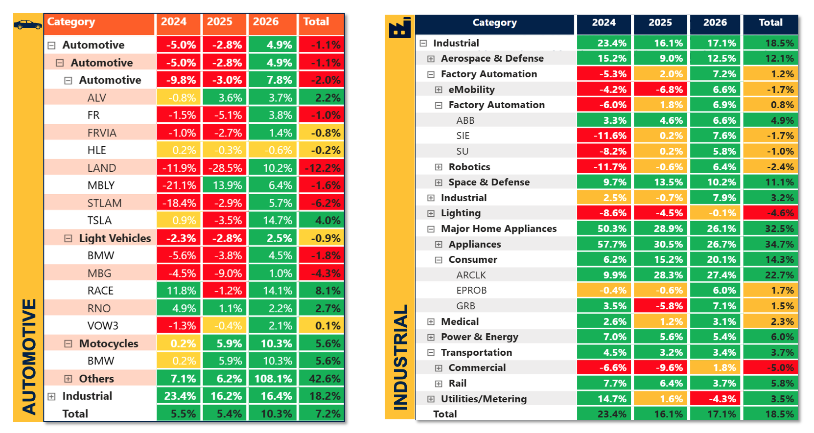
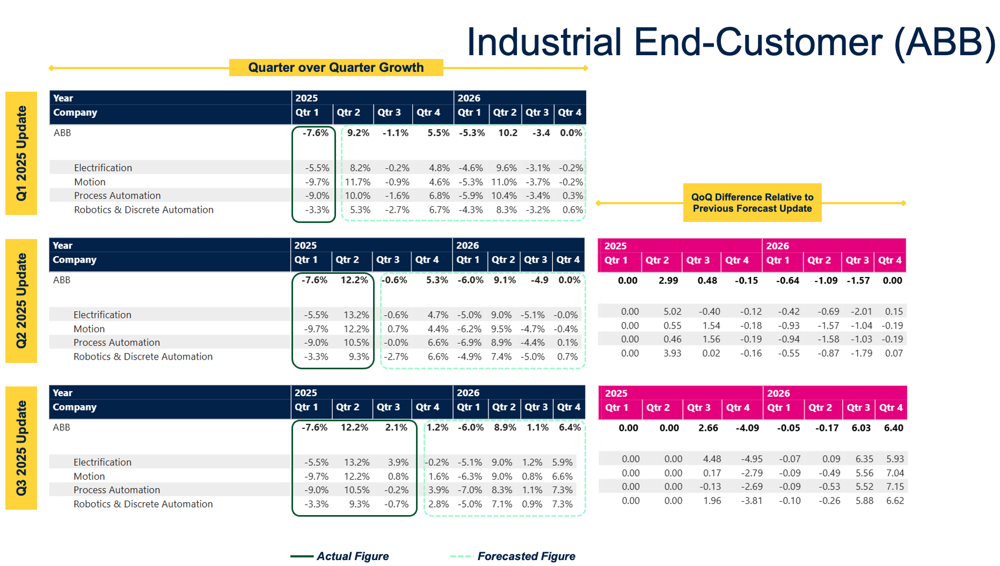

STMicroelectronics, forecasting the reporting segment revenue of 50 plus key customers to build forward looking demand signals
Every semiconductor company leans on data providers such as OMDIA, WSTS, or S&P Global for demand signals. These providers give useful industry level growth rates, but they cannot show the end market growth trajectory from your own customers' point of view.
Take Infineon as an example. Its automotive customer, BMW, reports growth across three segments, Automotive, Financial Services, and Motorcycles. If, in a given quarter, BMW's overall growth comes only from Financial Services, it adds nothing to Infineon's automotive revenue. This is exactly why end market growth needs to be forecast through a customer's segment lens, not through their overall top line number.
Situation. Industry level, top down forecasts were hiding real segment divergence. There was no system to translate customer performance into a usable demand signal for ST, so planning leaned on lagging, generalized indicators.
Task. Collect segment revenues for 50 plus key customers, build a seasonality indexed consensus forecast model, and validate the bottom up output against WSTS and OMDIA.
Action. Designed and ran a 6 step methodology: historical data collection, revenue split mapping, seasonality indexing using actuals and consensus, forecast construction, industry clustering, and cross validation.
Result. Proprietary, segment level intelligence that enables high value sales prioritization. Product, Supply Chain, Sales, and Marketing, all four business functions, now plan proactively from one shared model.
Product Management. Forward looking customer health signals inform the product roadmap, vision setting, and pricing strategy per segment trajectory.
Supply Chain. Capacity decisions are anchored to forward looking segment demand, not lagging industry data.
Marketing. Go to market focus is mapped to the highest growth clusters, surfacing niche opportunities early.
Sales. Account prioritization narrows down to the reporting segment level, so the team knows which business unit is accelerating before the overall market shows it.

Segment level forecast versus actual, by end industry and year, inside the Power BI model.

Automotive and Industrial segment breakdown, cross validated against WSTS and OMDIA.

Forecast accuracy tracked release over release, actual versus forecast, so any drift gets caught and corrected the next quarter rather than discovered a year later.